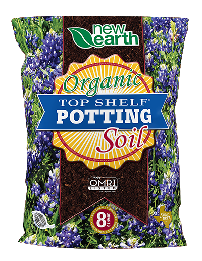
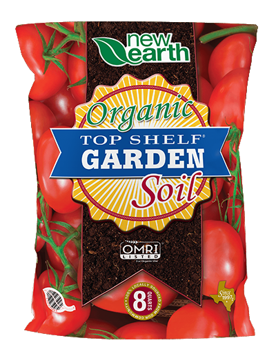
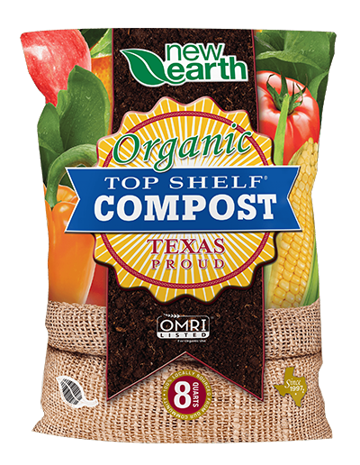
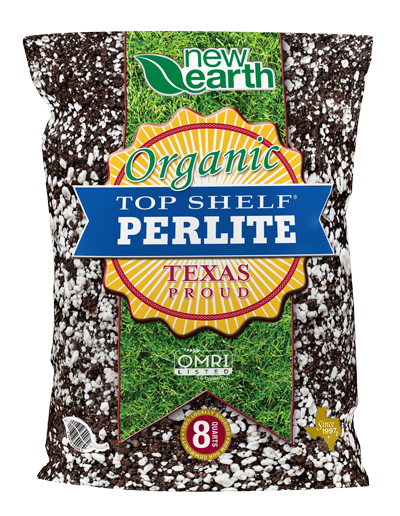
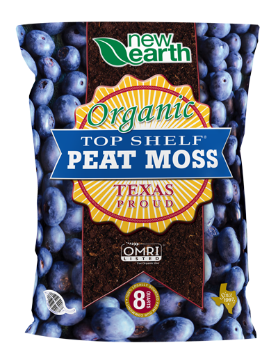
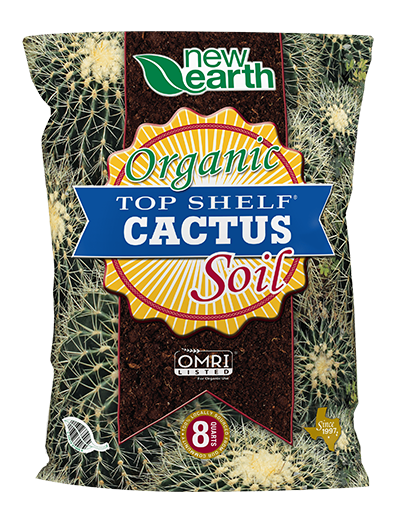
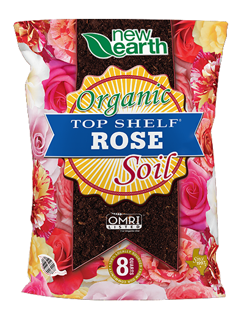

Omri Listed
Organic Materials Review Institute (OMRI) is a nonprofit organization that provides an independent review of the ingredients in products such as soils, fertilizers, soil amendments, and thousands of other products. OMRI focuses purely on what goes into making these products to certify all the inputs are organic. The OMRI seal ensures everything in the Top Shelf bags are produced 100% organically.
Our Products
-

Top Shelf® Potting Soil
This mix forms an ideal media for your plants to grow strong in container pots, raised beds, or your garden. We start by taking our Top Shelf Compost then add sand, pine bark, and perlite.
Learn More -

Top Shelf® Garden Soil
Crafted from locally sourced raw materials to ensure quality performance in your landscape. This specialty blend of our Top Shelf® Compost, clean chocolate loam, and Poteet red sand is perfect for your garden or any general landscape application.
Learn More -

Top Shelf® Compost
Transformed through blending nitrogen and carbon material at a sustained high temperature with the right amount of oxygen and moisture. Millions of microbes then break down the organic matter into humus-rich food for your plants.
Learn More -

Top Shelf® Perlite
A soil amendment that promotes better soil quality for potted and yard plants. Top Shelf® Perlite improves drainage and prevents soil compaction. Top Shelf®Perlite is best used with potted plants and as a seed starter.<
Learn More -

Top Shelf® Peat Moss
Improves soil quality for plants that need more acidic soil, such as blueberries, roses, and azaleas. Top Shelf® Peat Moss retains water much better than most soil amendments, it works well to start seedlings, and it does not contain harmful pathogens or weed seeds.
Learn More -

Top Shelf® Cactus Soil
Designed for cactus, palms, citrus, and succulents, with aged pine bark, peat moss, and manure compost. Top Shelf® Cactus Soil is crafted to improve water drainage and boost root development for sun-loving, drought-tolerant plants.
Learn More -

Top Shelf® Rose Soil
Perfect for planting roses, perennials, herbs, and cactus but can also be used for citrus and vegetables. A balanced blend of compost, reclaimed topsoil, sand, and pine bark will help your plants grow healthier.
Learn More